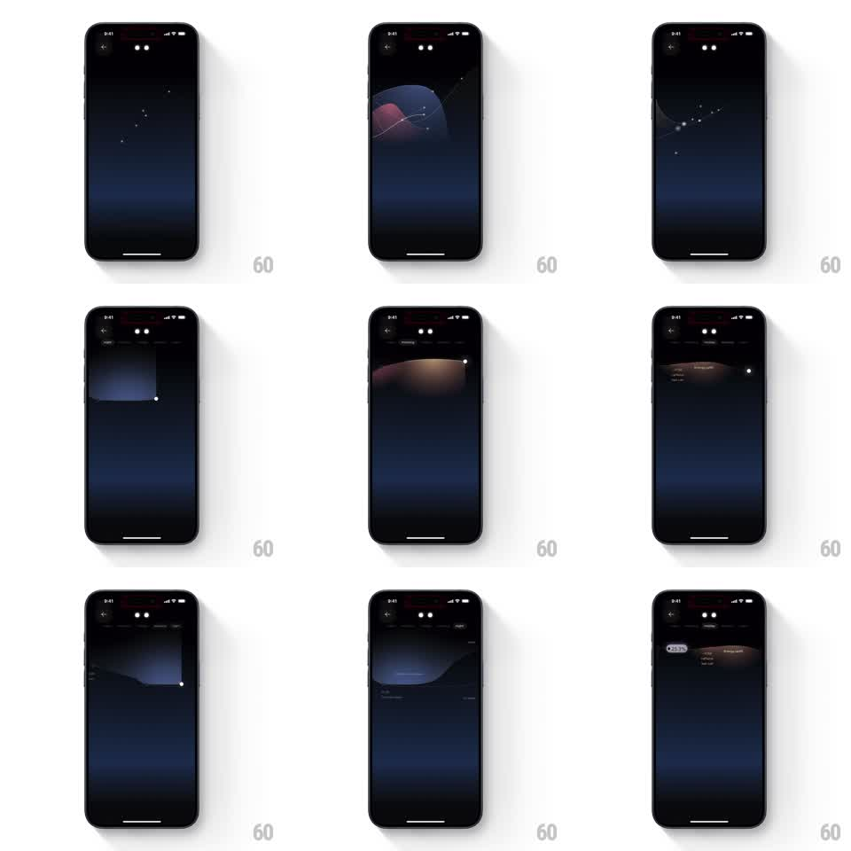

Media
Frame-by-frame

Rebuild this animation 1:1: Remy AI's energy onboarding - a constellation of stars morphs into a fluid energy curve, and time-of-day tabs slide the graph and a bottom sheet through the day's phases.

Rebuild this animation 1:1: Remy AI's energy onboarding - a constellation of stars morphs into a fluid energy curve, and time-of-day tabs slide the graph and a bottom sheet through the day's phases. ## Integration Integration: stack-agnostic spec - springs given as stiffness/damping, timed motions as duration + curve; map every value to your framework and animation library of choice. ## Scene A dark night-sky onboarding screen. Sparse stars connect into a constellation that morphs into a soft glowing energy curve (blue and warm orange phases) arcing across the screen. Time-of-day tabs (Night, Morning, Afternoon, Evening) sit at top; a bottom sheet carries the phase label and copy. Later a value chip (25.3%) rides the curve. ## Motion spec Pattern: constellation-to-graph morph with tab scrubber, ~1.5s per phase. - Stars twinkle (individual opacity pulses, 2s staggered), then drift toward the curve path (600ms, ease-in-out), connecting lines drawing between them as they land (300ms). - The constellation relaxes into the smooth energy curve, the line becoming a soft filled gradient area under the arc (400ms crossfade). - On tab change, the curve morphs to the new phase shape (500ms, ease-in-out), its color temperature shifting (cool blue night to warm morning orange), and the bottom sheet slides up with the new phase's copy (spring stiffness 300 damping 22). - The value chip slides along the curve to its new position (500ms, following the path, not a straight line). ## Calibration - Stars keep faint trails as they drift - the morph reads as the stars becoming the graph. - Phase colors are the information: keep the cool-to-warm progression. ## Reduced motion Phases crossfade; chip jumps without path travel. ## Don't miss - The curve is a filled gradient area, not a stroked line. - The bottom sheet rounds its top corners and floats over the graph's lower third.